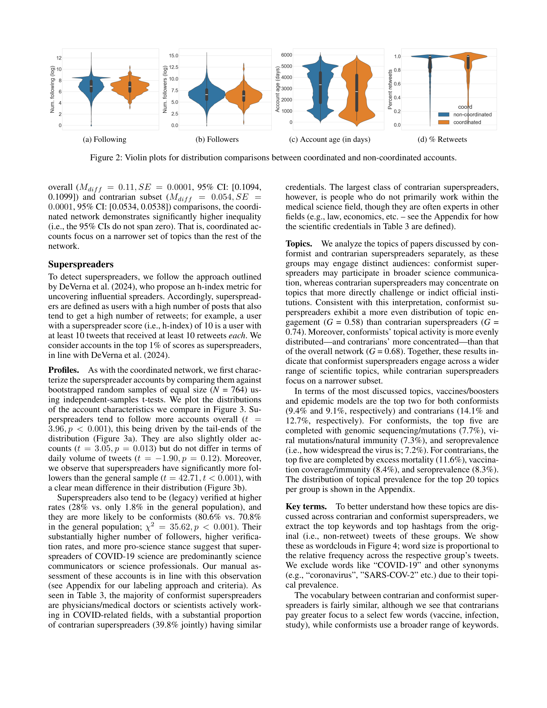

Figure 1
저자: Alexandros Efstratiou, Giuseppe Russo, Luca Luceri | 날짜: 2026 | DOI/arXiv: arXiv:2603.17249v1
Figure 1
본 논문은 COVID-19 관련 과학 논문의 온라인 확산 경로를 소셜 미디어(Twitter)와 뉴스 미디어를 아우르는 multi-level 관점에서 분석한다. 1.24M 트윗과 211K 뉴스 기사를 분석하여, 조직적 contrarian 네트워크가 반합의(anti-consensus) 전문가를 불균형적으로 증폭시키는 현상, 그리고 뉴스 미디어 보도가 Twitter superspreader 활동에 시간적으로 후행하는 information pathway를 발견하였다.

Figure 2
과학적 사실에 대한 회의론이 증가하고, 과학 커뮤니케이션이 온라인 공간에서 grassroots 형태로 이루어지고 있다. 기존 연구는 전문가, 뉴스 미디어, 소셜 미디어 사용자를 개별적으로 분석해 왔으나, 이들의 상호작용과 과학 커뮤니케이션 형성에서의 역할 관계는 잘 알려지지 않았다. 특히 분산된 grassroots 활동이 어떻게 중앙화된 전문가 영향력이나 조직적 정보 조작으로 발전하는지, 뉴스 미디어가 이 정보 흐름에서 어떤 위치를 차지하는지 이해가 부족했다.

Figure 3

Figure 4

Figure 5
총평: COVID-19 과학 커뮤니케이션의 multi-level 정보 경로를 포괄적으로 분석한 우수한 연구로, 조직적 contrarian 증폭과 Twitter-to-news precedence라는 두 가지 핵심 발견은 과학 커뮤니케이션과 misinformation 연구에 중요한 함의를 제공한다.